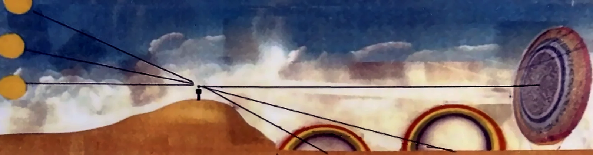
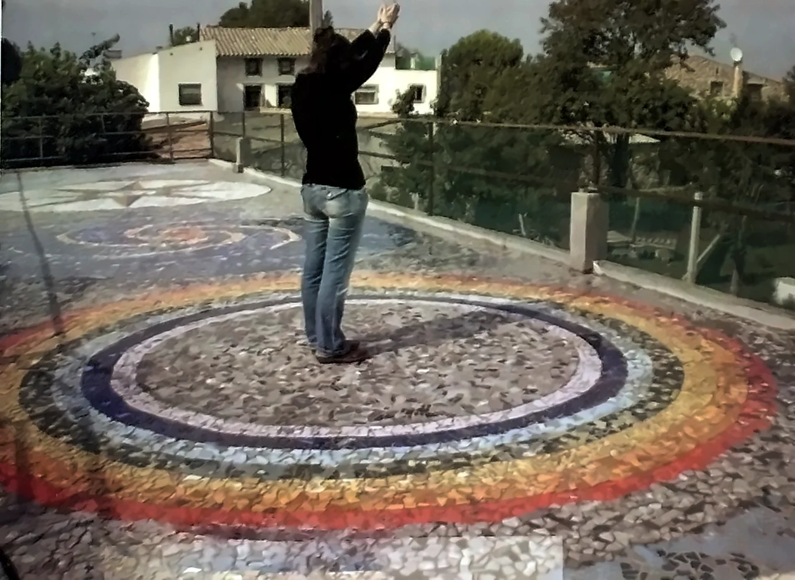
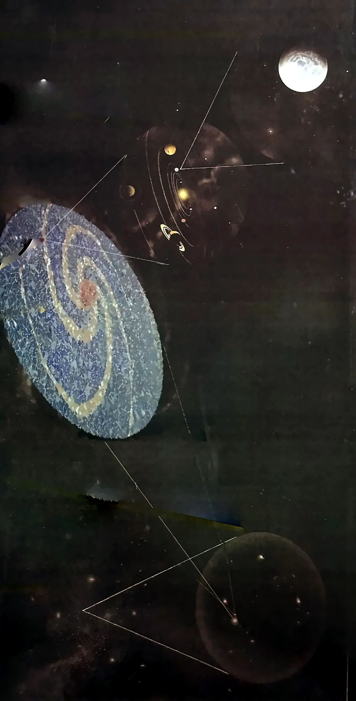
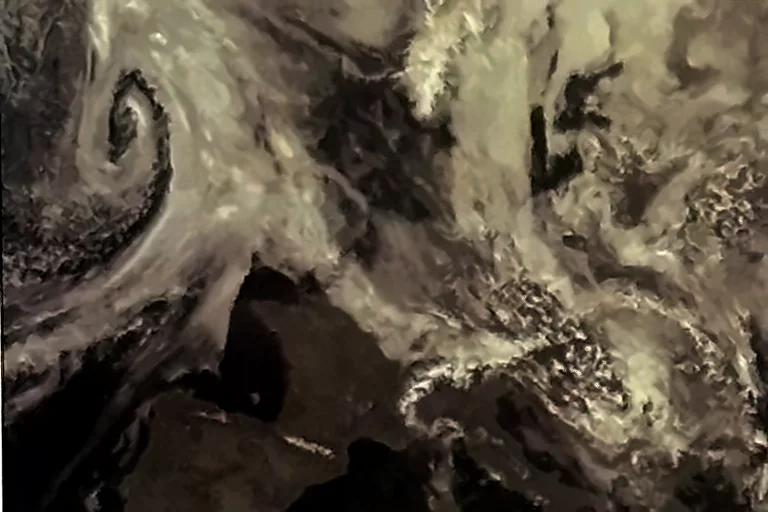
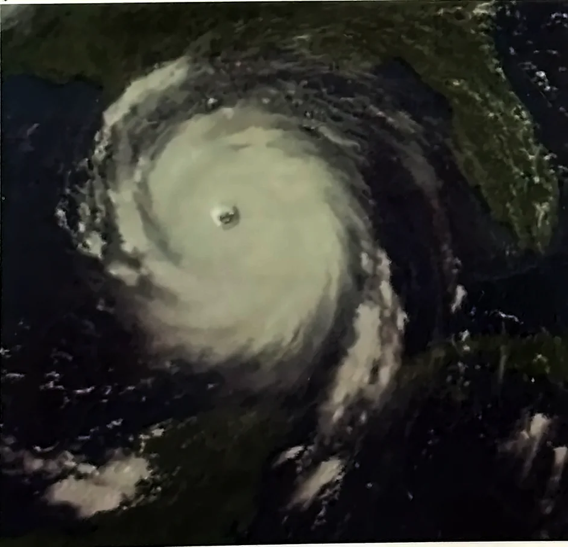
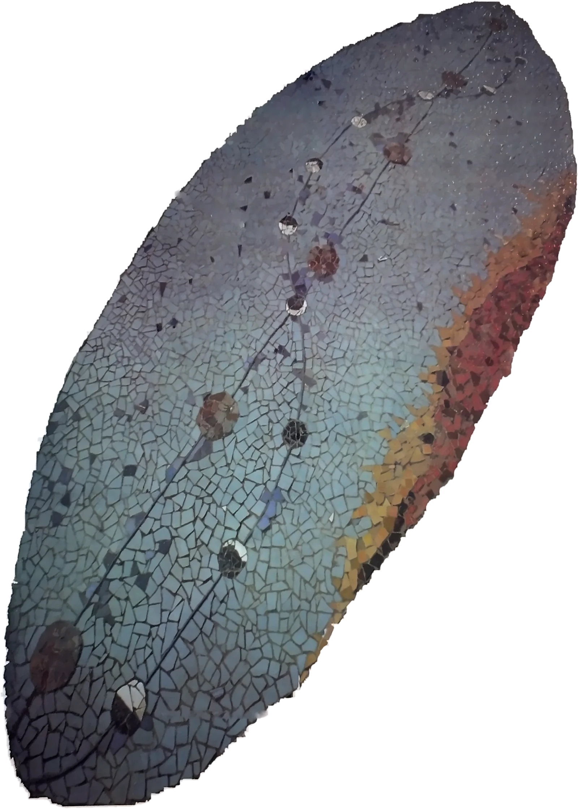
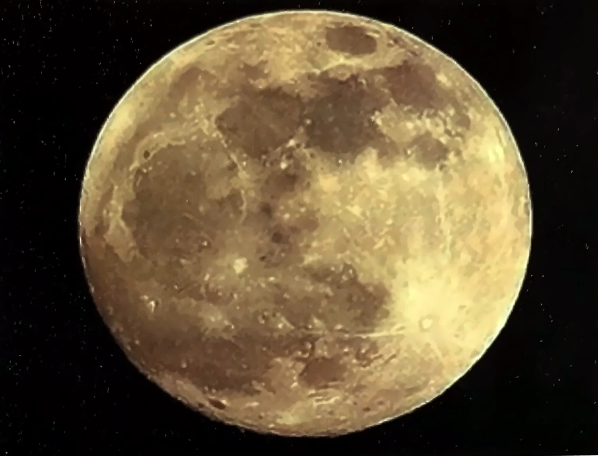
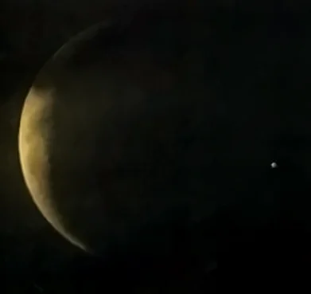

脚下的天文学
天空观景台
天空观景台

全年可见的
星座

仙王座
仙后座
天龙座
小熊座
大熊座
北极星（北）
观测点


夏至
春分 / 秋分
冬至
埃莱娜看着太阳升起
彩虹


太阳
地球
被水滴反射的阳光



可以用来看时间。

水帘
水帘位于斜坡底部的滑索区。
它是观景台的补充，证明彩虹不是一道弧，而是一个圆。你可以亲自验证。
一定要选一个晴天。
早上站在水帘前，彩虹就在你面前。
下午坐滑索滑下来，彩虹就在你前方。
但如果正午站在水帘下，太阳就在头顶正上方，彩虹会变成画在你脚下的一个圆，跟着你移动、跳舞，而且只跟着你。看到每个人都有属于自己的彩虹，真是奇妙。

银河

地球
我们的太阳系
银河
（我们的星系）
我们的太阳系
猎户臂
成千上万个星系
宇宙
罗盘玫瑰

特拉蒙塔纳风（北）
梅斯特拉尔风（西北）
格雷加尔风（东北）
波嫩特风（西）
列万特风（东）
加尔维风（西南）
沙洛克风（东南）
米乔恩风（南）
风如何运动

水龙卷
气旋与反气旋

飓风

鸟类迁徙

月相

地球
太阳
月亮

“上弦月，角朝东”
“下弦月，角朝前”

上弦
下午看到的月亮正在变圆
下弦
早上看到的月亮正在变缺


满月从东方升起
满月时，它在太阳落山前就已升起
用箭头、滑动或点击页面边缘来翻页。